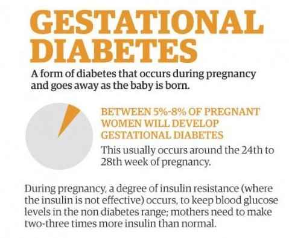

Type 1 diabetes is an auto-immune condition: your body’s immune system attacks the cells in your pancreas that produce insulin. The exact cause of this reaction is still unknown, but diet and lifestyle are not factors that determine who gets type 1 diabetes. Research suggests that both genetics and the environment may play a part. While having a family history increases your risk, most people with type 1 diabetes have no family history of the condition.
Type 2 diabetes develops gradually over years as your body’s insulin becomes less effective at managing your blood glucose levels. As a result, your pancreas produces more and more insulin, and eventually the insulin producing cells wear out and become ineffective. Type 2 diabetes is a combination of low insulin and ineffective insulin.The risk of getting type 2 diabetes increases with certain lifestyle factors:
During pregnancy, certain hormones that provide nutrition for a growing baby reduce the effectiveness of the mother's own insulin. If the pancreas is unable to produce enough insulin in response, blood glucose levels rise and gestational diabetes develops.